tags:
- FFXIV
- Guide
- Event
- Yo-kai
Start date: 24 April 2024
End date: Release of 7.0
icon: LiPartyPopperEvent details
Start date: 24 April 2024
End date: Release of 7.0
Speak with the poor-heeled youth on the Steps of Nald (X:9.2 Y:9.1). Upon completion of the quest, you will receive a Yo-kai Watch and Yo-kai Medallium which you can use to obtain Yo-kai Medals
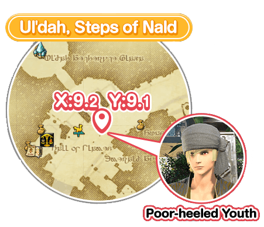
In order to undertake this quest, your character must be above level 15, and you must first complete one of the following main scenario quests:
- The Gridanian envoy
- The Lominsan envoy
- The Ul'dahn Envoy
After gathering Yo-kai Medals and delivering them to the wandering executive at the Gold Saucer, he will introduce you to your favorite Yo-kai. By befriending these Yo-kai, you will be able to summon them as in-game minions. Collect more medals to meet more Yo-kai!
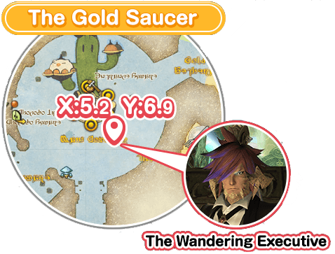
Minions are little companions that follow you around, and your most cherished minions can accompany you on your adventures throughout the realm.
You can exchange Legendary Yo-kai Medals with the Wandering executive for your favorite Yo-kai weapon.
See below for all the information related to rewards.
Equip the Yo-kai Watch and take part in FATEs in the areas listed below:
FATEs are open-world events that occur spontaneously throughout Eorzea where you and other adventurers join together to fight monsters or assist people in distress. FATEs in progress appear as purple icons on the map, so you can easily locate one and jump in at any time!
Legendary Yo-kai Medals are obtainable by participating in certain FATEs while accompanied by the Yo-kai minion that corresponds to the desired weapon.
With a lot of dedication (and luck), you can gather enough medals to get any Yo-kai weapon you want!
There are specific destinations where you should go to gather Legendary Medals, and the location is different depending on the weapon. Be sure to check the Yo-kai Medallium for details on where to go to search for medals.
There are 17 Yo-kai to be discovered, and once you have found 13, they can be called to your side as minions.
You will also gain access to the Whisper-go mount!
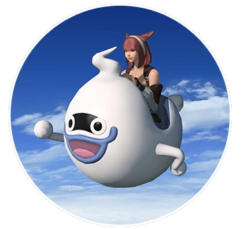
If you collect 13 different Yo-kai Weapons you will have access to the Whisper A-go-go mount!
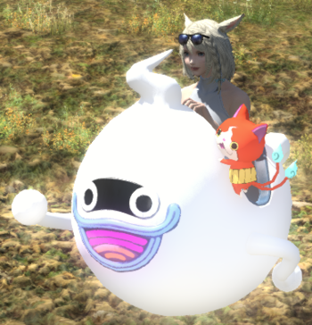
Collecting all 17 different Yo-kai Weapons will give you access to the Jibanyan Couch Mount!
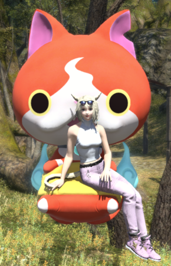
After befriending all 17 Yo-kai, you can speak with Nohiat the Gold Saucer (X:5.2 Y:6.9) to purchase a Yo-kai Watch farmer's kit with Manderville Gold Saucer points (MGP)
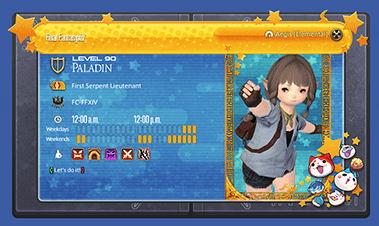
The framer's kit costs 20.000 MGP
Exchange 10 Legendary Yo-kai Medals of the corresponding minion at the Wandering executive for your favorite Yo-kai weapon.
See tables below for more info:
| Job | Weapon | Minion | Legendary Medal Zones |
|---|---|---|---|
| Warrior | 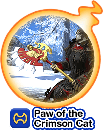 | Jibanyan | Central Shroud Lower La Noscea Central Thanalan |
| Paladin | 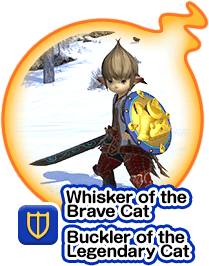 | Shogunyan | Lower La Noscea Central Thanalan East Shroud |
| Dark Knight | 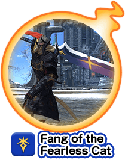 | Hovernyan | Western La Noscea Eastern Thanalan South Shroud |
| Gunbreaker | 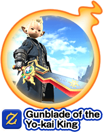 | Lord Enma | Stormblood All Zones |
| White Mage | 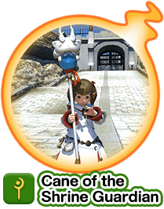 | Komasan | East Shroud Western La Noscea Eastern Thanalan |
| Scholar | 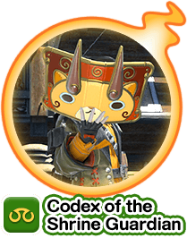 | Komajiro | Central Thanalan East Shroud Western La Noscea |
| Astrologian | 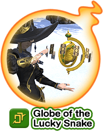 | Noko | Southern Thanalan North Shroud Outer La Noscea |
| Monk | 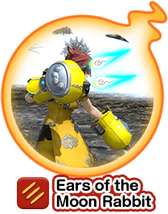 | USApyon | Outer La Noscea Middle La Noscea Western Thanalan |
| Dragoon | 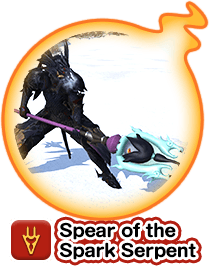 | Venoct | Middle La Noscea Western Thanalan Central Shroud |
| Ninja | 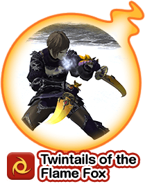 | Kyubi | Western Thanalan Central Shroud Lower La Noscea |
| Samurai | 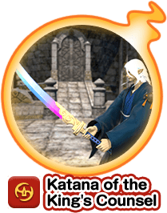 | Zazel | Heavensward All Zones |
| Bard | 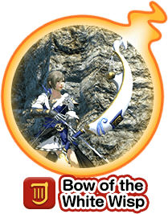 | Whisper | South Shroud Upper La Noscea Southern Thanalan |
| Machinist | 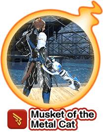 | Robonyan F-type | Upper La Noscea Southern Thanalan North Shroud |
| Dancer | 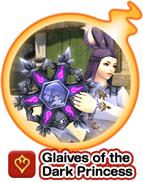 | Damona | Stormblood All Zones |
| Black Mage | 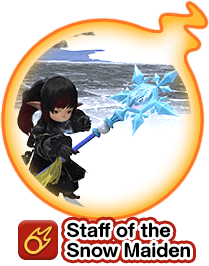 | Blizzaria | North Shroud Outer La Noscea Middle La Noscea |
| Summoner | 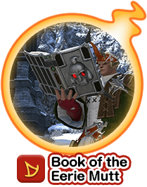 | Manjimutt | Eastern Thanalan South Shroud Upper La Noscea |
| Red Mage | 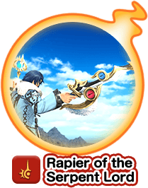 | Lord Ananta | Heavensward All Zones |
Some minion medals can be farmed in the same zones. So if you find some FATEs that you can clear quickly or have people around to speed up you may do more than one minion's medals in the same zone!
See groupings on the table below.
| Zone | Minions |
|---|---|
| Heavensward All Zones | Zazel Lord Ananta |
| Stormblood All Zones | Lord Enma Damona |
| Central Thanalan | Komajiro Shogunyan Jibanyan |
| Eastern Thanalan | Manjimutt Hovernyan Komasan |
| Southern Thanalan | Noko Robonyan F-type Whisper |
| Western Thanalan | Kyubi Venoct USApyon |
| Lower La Noscea | Shogunyan Jibanyan Kyubi |
| Middle La Noscea | Venoct USApyon Blizzaria |
| Outer La Noscea | USApyon Blizzaria Noko |
| Upper La Noscea | Robonyan F-type Whisper Manjimutt |
| Western La Noscea | Hovernyan Komasan Komajiro |
| Central Shroud | Jibanyan Kyubi Venoct |
| East Shroud | Komasan Komajiro Shogunyan |
| North Shroud | Blizzaria Noko Robonyan F-type |
| South Shroud | Whisper Manjimutt Hovernyan |
Date: 27/04/2024
Collected by: W'eylyn Mavourneen